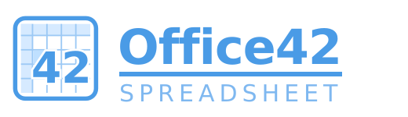
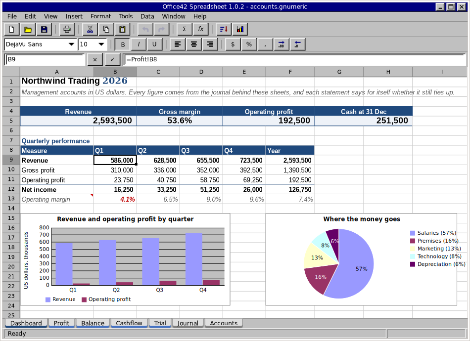

A spreadsheet in the shape of Excel 5 and at parity with Gnumeric, written from scratch in C on GTK 4, Pango and Cairo. A grid, a formula bar, a name box, two toolbars and sheet tabs along the bottom. No ribbon.
The sister project of Word42, built on the same principles: a small, honest codebase that does one thing well.

A working spreadsheet, not a demo. Everything below ships today, and docs/PARITY.md is an honest estimate of how far it is from Excel and from Gnumeric.
#,##0.00;[Red](#,##0.00), [h]:mmA1 and $A$1, whole rows and columns, 3-D references, namesLET and LAMBDA.INTL dates, the Excel 365 text and array functions.gnumeric, which carries everything.xlsx and .xls, with formulas, styles, charts, shapes, tables, names and notes.ods, checked against LibreOffice both waysbook and sheet bound=PY("expression") in a cell; functions defined in Python appear in the Function Wizard=SQLVALUE(...)FOURIER, HPFILTER, INTERPOLATION, PERIODOGRAMoffice42-calc drives the whole engine from standard inputoffice42 --screenshot renders the window to a PNG with nobody at the keyboardThe sheet is sparse: cells live in a hash table keyed by a packed row and column, and an empty cell costs nothing. Formulas are parsed once and kept as trees. Each formula cell records the rectangles it reads; when a cell changes the sheet marks stale every formula whose rectangles contain it, and theirs in turn, and nothing is recomputed until something asks.
The evaluator does not know what a sheet is. It reads values through a callback, which is why the engine builds as a library of its own and can be driven from a terminal:
$ ./builddir/src/office42-calc
A1 = 10
A2 = 20
B1 = =SUM(A1:A2)*2
B1
B1 60 (=SUM(A1:A2)*2)
dump
A B
1 10 60
2 20Six layers, each of which may only see the ones below it. formula/ never
includes model/, and neither includes GTK. Those two rules are the whole
architecture.
src/util/ cell addresses, values, number formats, dates
src/model/ the sheet, the book, charts, shapes, undo
src/formula/ the parser, the evaluator, the function library
src/io/ .gnumeric, .xlsx, .xls, .ods, CSV and the rest, PDF, SQLite
src/script/ Python: the office42 module, the interpreter
src/ui/ the grid, the window, the dialogs
src/main.c the window's entry point
src/calc-main.c the terminal front-end
data/ menus, icons, stylesheet
docs/ the guide, the architecture, the parity reviewdocs/ARCHITECTURE.md goes into detail.
For what a free spreadsheet should be able to do and for how to do it right. Gnumeric was built by people who cared about numerical correctness more than about features, and that is the standard to hold to.
For what it should look like and how it should behave: a grid, a formula bar, a name box, two toolbars and sheet tabs along the bottom. No ribbon.
Not planned: the ribbon, Visual Basic, co-authoring, Power Query and the Quattro Pro and Applix formats. docs/ROADMAP.md says why.
Version 1.0.0. Office42 builds from source on Linux, macOS and Windows, and
every push to main is built and smoke-tested on all three.
Office42 needs a C11 compiler, Meson, Ninja, and GTK 4.10 or newer with Pango, Cairo and gdk-pixbuf. Python, Hunspell, SQLite and poppler-glib are used if they are there.
git clone https://github.com/office-42/office42.git
cd office42
meson setup builddir
meson compile -C builddir
./builddir/src/office42 # the window
./builddir/src/office42-calc # the engine, from a terminalPer-platform dependency lists are the same as
Word42's; see its
docs/BUILD.md.
The toolbar icons are SVG, so gdk-pixbuf wants its SVG loader at run time
(librsvg2-common on Debian and Ubuntu).
The
Linux,
macOS and
Windows
workflows build every push with --werror and upload the
office42-calc terminal front-end as an artifact, kept for fourteen days.
The repository's samples/
folder holds books that exercise the formats and the function library in
.xlsx, .xls and .fods.
Every menu, every dialog, the number-format codes, the keyboard and the terminal front-end.
A review of the code, module by module, and an honest estimate of how far it is from Excel and from Gnumeric.
The layers, the sparse sheet, the dependency graph, interned formats and the undo records.
The console, the office42 module, the macro recorder and =PY().
A SQLite database beside the book or inside it, and how a cell asks it a question.
What is left, in the order it is being done, and what is not planned and why.
Word42 is a classic word processor, written from scratch in C on GTK 4, Pango and Cairo: a menu bar, two toolbars, a ruler, a status bar and a page. Inspired by classic Microsoft Word and by AbiWord, on a modern text stack. Office42 is built on the same principles, shares its build recipe and its platform lists, and borrows its interned formatting and symmetric undo records.